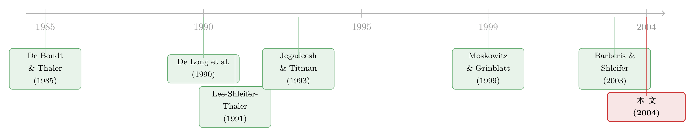

钱往哪只「篮子」流，股票就往哪只篮子涨——风格层面的反转与追涨
本文读的是 Teo & Woo (2004, Journal of Financial Economics)：作者用 CRSP 的股票与共同基金数据，发现「风格」(style) 这一层面存在强烈的收益反转与短期延续——过去两年表现最差的风格，其成分股在随后一年里能挣到 10.6%/年 的三因子超额收益；而且这套效应既不是基本面风险、也不是个股层面的反转或动量能解释的，它真正的驱动力，是投资者在风格之间「追涨杀跌」地搬钱。
1 引言：你买的真的是「这只股票」吗？
人类有一种根深蒂固的本能：给万物归类。车可以按品牌分（萨博还是沃尔沃），也可以按功能分（SUV 还是跑车）。股票同样如此——大盘还是小盘、价值还是成长、科技还是非科技，都是华尔街每天挂在嘴边的二分法。Jeremy Siegel 把这种做法叫做 风格投资 (style investing)：基金经理们「在小盘与大盘、价值与成长之间轮动」，而这「正风靡华尔街」(Siegel, 1998)。
这件事看似只是个分类游戏，但它有一个被长期忽视的后果。当投资者不再盯着单只股票、而是盯着「风格」来配置资金时，钱就开始成篮成篮地进出。一只本来平淡无奇的股票，可能仅仅因为它被归进了一个正当红的风格，就被资金的洪流抬着往上走。于是一个自然的问题浮现出来：
当投资者按风格搬钱时，股票的横截面收益里，会不会留下一道只属于「风格」的指纹？
这正是 Teo 和 Woo (2004) 想回答的问题。而他们要对付的真正难点，不在于「找到」这道指纹——找到反转和动量并不稀奇——而在于证明这道指纹是风格层面的，不是个股层面的。因为关于个股的反转与动量，我们早已有一整套成熟的故事。
2 一个悬念：反转，到底发生在哪一层？
先把张力摆清楚。
我们知道，输家股票会反转（De Bondt and Thaler, 1985），赢家股票会延续（Jegadeesh and Titman, 1993）。所以，如果你发现「过去表现差的风格随后涨得好」，一个偷懒的解释立刻就能搬出来：那不过是因为差风格里塞满了差股票，而这些差股票本来就要均值回归。风格层面什么都没发生，发生的全在个股层面。
要把这个偷懒的解释挡在门外，你必须做一件很费劲的事：在控制住「个股自己过去的表现」之后，再看「风格过去的表现」还有没有解释力。如果风格的解释力被个股吃干抹净，那 Barberis and Shleifer (2003) 那套「风格层面的噪声交易推动价格偏离基本面」的说法就站不住脚；可如果控制了个股之后，风格效应依然顽强地活着，那才说明确有一股力量是冲着「篮子」来的，而不是冲着「篮子里的某颗鸡蛋」。
这就是全文反复要把它讲透的那一个核心：风格效应能不能在个股效应面前幸存下来。
3 识别策略：把「风格」从「个股」里剥出来
作者的做法分三步，环环相扣。
第一步，是怎么定义「风格」。 这里有一个聪明的设计。他们不用因子载荷（比如对 Fama-French 因子的 beta）来给股票贴风格标签——因为载荷是潜变量、投资者根本观察不到，而且估载荷要 30–36 个月数据，会把存续不足三年的基金统统剔掉，引入幸存者偏差。他们用的是 Morningstar 风格箱 (Morningstar style box)：小盘/中盘/大盘 × 成长/混合/价值，共九个风格。具体的断点沿用 Fama and French (1993) 的 NYSE 分位点——账面市值比 (BE/ME) 低于 30 分位是成长股、高于 70 分位是价值股；市值 (ME) 同理切小/中/大。
关键的一招在这里：风格收益和风格资金流，都不从股票里算，而从共同基金里算。 原因很现实——Morningstar 风格只对基金有定义（至少 2002 年之前如此），基金会大大方方用名字宣告自己的风格（比如 Kemper Small Cap Value Fund），而股票不会；更重要的是，资金在风格间搬家，用基金比用股票容易得多。想把钱从风格 A 挪到风格 B，你只需赎回一只 A 基金、买入一只 B 基金即可；可若用股票来复制，你得卖掉 A 风格里几百只股票、再买入 B 风格里几百只股票，交易成本高到劝退。所以「大盘价值风格」的收益，就定义为所有大盘价值基金的平均收益；而风格资金流，则是把该风格下所有基金的净流入加总。
基金净流入怎么算？就是用总净资产 (total net assets, TNA) 的增长，剔掉收益本身带来的那部分：
$$ \text{Fund flow}_{i,t} = \text{TNA}_{i,t} - (1 + R_{i,t})\,\text{TNA}_{i,t-1} $$
直觉很干净：如果一只基金期末的资产，恰好等于期初资产「按它自己的收益滚一遍」，那就说明没有新钱进出，flow 为零；超出的部分，才是投资者真金白银搬进来的。
第二步，是怎么检验。 每年 1 月 1 日，按各风格过去两年的收益，把股票分成九个等权组合，持有一年再重组，得到 1984 年 1 月到 1999 年 12 月的月度收益序列。然后把组合收益对常见风险因子回归，看横截面差异能否被因子的协动性吃掉。两套模型：Fama and French (1993) 三因子和 Carhart (1997) 四因子。
$$ r_{im} = a_i + b_{iM}\,\text{RMRF}_m + s_{iM}\,\text{SMB}_m + h_{iM}\,\text{HML}_m + e_{im} $$
$$ r_{im} = a_i + b_{iM}\,\text{RMRF}_m + s_{iM}\,\text{SMB}_m + h_{iM}\,\text{HML}_m + p_{iM}\,\text{PR1YR}_m + e_{im} $$
这里 \(r_{im}\) 是组合超过一月期国库券的月度超额收益，RMRF、SMB、HML 分别是市场、规模、账面市值比因子，PR1YR 是 Carhart 的一年动量因子；截距 \(a_i\) 就是我们要找的 alpha。用因子回归的好处是：如果排序出的收益差完全被它与因子的协动性解释掉，那这就是风险补偿、不是异象；反之，残下的 alpha 才是真正值得讲故事的东西。
第三步，也是最关键的一步，留到第 5 节再说——那是把「风格层面的故事」和「个股层面的故事」彻底掰开的地方。
4 主要结果：差风格里，藏着 10.6% 的年化超额
先看最直接的排序结果。按过去两年风格收益排出的九个组合，月度超额收益的离散度非常大：表现最差的风格组合（组合 1）月度超额收益高达 187 个基点（合 22.4%/年），而它与最好风格组合（组合 9）的价差是 105 个基点/月（12.6%/年）。作为参照，同期市值加权市场指数 (RMRF) 的平均超额收益只有 93 个基点/月（11.2%/年）。换句话说，一个买入「过去两年最差风格」的投资者，单凭这个就能比市场多挣约 11.2%/年——这在任何标准下都是经济上巨大的数字。
但这会不会只是风险补偿？毕竟差风格里价值股多，HML 载荷会偏高。作者把三因子一上，确实吸走了一部分：组合 1 对 HML 的正载荷说明它确实更「价值」。然而，在剔除规模和账面市值比之后，那个买差风格、卖好风格的投资者，依旧拿到 84 个基点/月（10.1%/年）的异常收益；单看最差风格组合，三因子 alpha 是 88 个基点/月（10.6%/年），t 值高达 4.55。换到四因子模型，差—好价差也只是微微缩到 82 个基点/月，几乎纹丝不动。每个回归 192 个观测。
这就是核心反转。那么短期呢？作者也检验了风格的延续 (continuation)：按过去一个季度风格收益排序，最好风格组合的三因子 alpha 是 6.0%/年，比最差风格组合高 5.3%。方向对，但比起年度反转，季度动量要弱得多。
一句话记住这组数字：长周期（两年）看反转，差风格随后涨；短周期（一季）看延续，好风格继续涨。 这恰恰是正反馈交易者「近期追涨、远期均值回归」的标准节奏。
5 反转出现：把个股的解释一条条堵死
到这里，怀疑论者还有最后的退路：上面那些 alpha，会不会只是个股反转/动量在风格组合里的「投影」？作者用三管齐下把退路一条条堵死——这才是这篇论文真正的分量所在。
第一管，直接在横截面回归里塞进个股变量。 他们把个股的长周期、短周期收益滞后项，以及个股的比率（账面市值比、股息率等）一起作为协变量放进去。逻辑是：个股层面所有故事（个股反转、个股动量、个股正反馈、心理偏差、学习）的驱动力，归根结底都是个股收益和现金流；只要现金流的变动被个股收益与个股比率捕捉到了，把它们控制住，就等于同时把这一堆个股故事一并控制住。做完这套，风格层面的反转依然顽强存活——个股故事讲不动它。
第二管，比较「谁更像替代品」。 Barberis and Shleifer (2003) 有一个很妙的预测：风格效应应该在那些互为更好替代品（即更激烈地争夺同一笔资金流）的风格之间更显著。作者于是把「价值/成长」这一对和「小盘/大盘」这一对放在一起比，发现延续与反转在价值/成长这一对里更强。这一点几乎无法用任何风格层面的「学习」或「心理偏差」来解释——你很难说清，为什么投资者偏偏会对「互为更好替代品」的风格反应过度，或者为什么学习偏偏在这些风格之间进行得更慢。这条证据，是把行为故事从「个股反应过度」往「风格资金流」逼的关键一推。
第三管，也是收口的一管：直接去看资金流。 作者发现，风格资金流确实在追逐好的风格收益，而且这在控制了个股层面正反馈交易之后依然成立；更进一步，风格资金流和风格收益在解释个股收益时共享解释力。这就把因果链补完整了：风格收益 → 吸引资金流 → 风格切换者的正反馈买卖 → 推动个股收益。钱往哪只篮子流，篮子里的股票就往哪儿涨。
至此，那个核心问题有了答案：风格效应不是个股效应的投影，它是一股独立的、由资金在篮子间搬家所驱动的力量。
6 文献脉络
把这条线捋一捋，会看到两股溪流如何汇成一条河。
一股是个股层面的行为金融：De Bondt and Thaler (1985) 发现股市会过度反应、输家会反转；Jegadeesh and Titman (1993) 发现赢家会延续，给出动量；De Long et al. (1990) 给出正反馈交易如何让理性投机也变得不稳定；Barberis et al. (1998)、Daniel et al. (2001) 则从心理偏差给反应过度/不足建模。这一股流，是本文必须「控制掉」的背景噪声。
另一股是风格/类别层面的新故事：Lee et al. (1991) 用封闭式基金折价说明同一交易所的基金折价会一起动；Froot and Dabora (1999) 发现皇家壳牌这类「同一家公司、两地上市」的孖股价格并不同步，而是各自跟着上市地的市场走；Barberis et al. (2004) 则发现一只股票被纳入标普指数后，它与指数的 beta 和 \(R^2\) 上升、与指数外股票的 beta 和 \(R^2\) 下降——这就是「共动」(comovement) 的直接证据（关于这条线，可参见《被「打包」进同一个篮子的股票，就开始一起呼吸了》）。风格层面的动量也陆续被验证：Moskowitz and Grinblatt (1999) 在行业组合上、Asness et al. (1997) 在国家组合上都做出了动量；Lewellen (2002) 发现基于规模和账面市值比组合的动量至少和个股动量一样赚钱。

这两股溪流在 Barberis and Shleifer (2003) 那里被一个模型拧到一起：他们第一次正式刻画了一个由正反馈风格投资者、基本面交易者组成的经济，并推出两个可检验的预测——同风格资产的价格会比基本面更同步、风格层面的动量与价值策略会赚钱。本文正是站在这个模型之后，专门去回答模型留下的那个最硬的问题：控制了个股之后，风格价值与动量还赚钱吗？ 与之最接近的是 Kumar (2002)，他用高频持仓数据也发现价值/成长这一对的延续比小盘/大盘强；但本文样本期 1984–1999 更长（Kumar 是 1991–1996），得以检验反转，并且主动地与个股解释正面交锋——这一点，是把 Barberis-Shleifer 故事真正往前推的地方。本文也与 Asness et al. (2000) 互补：后者说价值利差高时价值溢价更大，而本文的反转结果说，价值溢价在价值相对成长「近几年表现差」时最强。
7 评论与延伸（Q&A + 研究方向）
(a) 几个可能的疑问
Q：用基金算「风格收益」，而不是用股票指数，会不会本末倒置？
不会，反而是这篇论文的巧思。Morningstar 风格只对基金有定义，基金又会用名字明示风格，且资金在基金间搬家成本极低——所以用基金恰恰抓住了「投资者实际是怎么按风格搬钱」的那一面。更实际的好处是：用基金能直接把风格资金流加总出来，而指数层面的资金流数据很难拿到。这也是第三管证据（资金流追涨）得以成立的前提。
Q：差风格里价值股扎堆，10.6% 会不会只是 HML 因子没控干净？
作者正面回应了。三因子里 HML 载荷确实显著为正，说明差风格组合更偏价值；但剔掉 HML 之后 alpha 仍有 10.6%/年（t=4.55），四因子下价差也几乎不变。而且他们在排序里控制了 HML，所以结果与 Asness et al. (2000) 的「价值利差」故事是相对独立的。
Q：这跟个股层面的 De Bondt-Thaler 反转到底差在哪？
差在驱动变量。个股反转由个股自己过去的收益驱动；风格反转由风格（即一篮子基金）过去的收益驱动。论文的全部努力，就是在回归里把个股收益滞后项、个股比率都控制住之后，证明「风格过去收益」还有独立的解释力——这是个股故事无论如何也覆盖不了的。
Q：为什么偏偏价值/成长这一对的效应比小盘/大盘强？
因为在投资者眼里，价值和成长互为「更好的替代品」，更直接地争夺同一笔资金流。Barberis-Shleifer 预测，替代性越强、争夺资金越激烈的风格之间，正反馈推动的延续与反转就越明显。这条横向比较，恰恰是行为「过度反应/学习」故事最难解释的——你说不清投资者为何偏偏对替代性更强的风格反应更过度。
Q：样本止于 1999 年，今天还成立吗？
这是诚实要承认的局限。样本期正好覆盖了一个风格轮动极其剧烈的年代（成长股泡沫前夜）。2003 年起 Morningstar 风格也开始对股票定义，基金风格的自我标识、被动指数化的浪潮都改变了「资金按风格搬家」的微观结构。结论的外推需要在新样本里重做。
Q：风格资金流和风格收益「共享解释力」，能证明因果吗？
严格说，这是相关性证据，不是干净的因果识别。资金流追涨与风格收益可能互为因果，甚至同受第三方（宏观情绪）驱动。论文用「控制个股正反馈后流仍有解释力」来加固，但缺一个外生冲击来真正切断反向因果——这正是后续研究的空间。
(b) 几个可能的研究问题与提案
1. 把风格反转搬到公司债/信用市场。 【经济故事】债券基金同样高度风格化（投资级/高收益、长久期/短久期、行业），资金按评级与久期成篮搬家的现象只多不少。若风格层面正反馈成立，差风格债券随后应有超额利差收窄。【可行性】中。需 CRSP/Morningstar 债券基金流 + TRACE 成交价构造风格收益，识别上可复刻本文的三管法；难点是债券流动性低、价格噪声大，须用更稳健的流动性调整收益。
2. 外资持有人是不是更「按风格搬家」的边际投资者？ 【经济故事】跨境投资者往往以国家/行业/风格篮子配置（ETF、指数化），他们的进出可能放大风格层面的正反馈。若某市场外资可投资度提高，风格反转/延续是否随之增强？【可行性】中。可用各国可投资度（investability）变动作准自然实验，配合基金持仓数据；识别靠「可投资度调整」的外生时点。
3. 风格资金流是否预测风格层面的流动性枯竭。 【经济故事】资金成篮撤出一个风格时，该篮子内股票可能同时面临卖压，引发共同的流动性冲击——这把风格效应与流动性风险接上了头。【可行性】高。Amihud 非流动性 + 风格流即可构造面板，检验风格净流出是否预测该风格成分股的流动性恶化与价差走阔。
4. 用现代被动指数化重做这套检验。 【经济故事】2000 年后风格 ETF 爆发，「按风格搬钱」的成本进一步降到地板，正反馈机制理应更强；但与此同时套利资本也更充裕，效应也可能被磨平——两股力量谁占上风是实证问题。【可行性】高。数据现成（ETF 流、Morningstar 风格箱已覆盖股票），可直接把样本延到 2024 年做样本外检验。
8 参考文献与我的判断
我的判断是：这篇论文最大的贡献，不在于「发现」了风格层面的反转与动量——单纯找到它们并不难——而在于它用三管齐下的设计，把「风格层面」与「个股层面」这两套高度纠缠的解释干净地分开了，尤其是「替代性越强、效应越强」这条横向比较，和「控制个股正反馈后资金流仍追涨」这条资金流证据，是把 Barberis-Shleifer 模型从理论往实证落地的实质一步。
要说对识别的担忧，我有两点。其一，风格的定义本身带着构造选择：用基金平均收益代理风格收益，等权还是 TNA 加权、九风格还是更细的切法，都会影响结果的量级；作者已就等权 vs TNA 加权做了讨论（高 TNA 小盘基金其实更像大盘），但这类构造稳健性值得更系统地做。其二，资金流的因果方向没有被真正切断——「流追收益」与「收益引流」互为因果的可能性始终在，缺一个外生冲击。
后续我最想看到的，是把这套框架放到一个有外生资金流冲击的环境里（比如指数纳入/剔除、监管引致的风格再配置、外资可投资度变动），以及把它从美股延伸到公司债与信用市场——在那里，风格化的资金搬家可能与流动性风险纠缠得更深，也更贴近当下「成篮交易」主导市场的现实。
参考文献
Asness, C., Liew, J., Stevens, R. (1997). Parallels between the cross-sectional predictability of stock returns and country returns. Journal of Portfolio Management 23, 79–87.
Asness, C., Friedman, J., Krail, R., Liew, J. (2000). Style timing: value and growth. Journal of Portfolio Management 26, 50–60.
Barberis, N., Shleifer, A. (2003). Style investing. Journal of Financial Economics 68, 161–199.
Barberis, N., Shleifer, A., Vishny, R. (1998). A model of investor sentiment. Journal of Financial Economics 49, 307–343.
Barberis, N., Shleifer, A., Wurgler, J. (2004). Comovement. Journal of Financial Economics, forthcoming.
Carhart, M. (1997). On persistence of mutual fund performance. Journal of Finance 52, 57–82.
Daniel, K., Hirshleifer, D., Subrahmanyam, A. (2001). Overconfidence, arbitrage and equilibrium asset pricing. Journal of Finance 56, 1839–1885.
De Bondt, W.F.M., Thaler, R. (1985). Does the stock market overreact? Journal of Finance 40, 793–805.
De Long, J.B., Shleifer, A., Summers, L., Waldmann, R. (1990). Positive feedback investment strategies and destabilizing rational speculation. Journal of Finance 45, 375–395.
Fama, E., French, K. (1993). Common risk factors in the returns on stocks and bonds. Journal of Financial Economics 33, 3–56.
Froot, K., Dabora, E. (1999). How are stock prices affected by the location of trade? Journal of Financial Economics 53, 189–216.
Jegadeesh, N., Titman, S. (1993). Returns to buying winners and selling losers: implications for stock market efficiency. Journal of Finance 48, 65–91.
Kumar, A. (2002). Style switching and stock returns. Unpublished working paper, Cornell University.
Lee, C., Shleifer, A., Thaler, R. (1991). Investor sentiment and the closed-end fund puzzle. Journal of Finance 46, 75–110.
Lewellen, J. (2002). Momentum and autocorrelation in stock returns. The Review of Financial Studies 15, 533–564.
Moskowitz, T., Grinblatt, M. (1999). Do industries explain momentum? Journal of Finance 54, 1249–1290.
Siegel, J. (1998). Stocks for the Long Run. McGraw-Hill, New York.